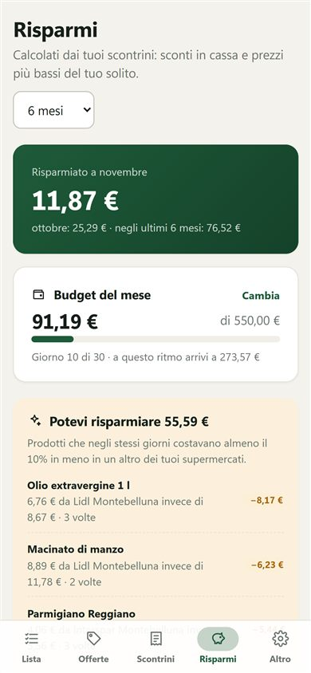
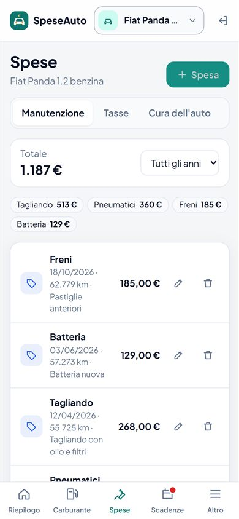

Guida · 4 minuti di lettura
Come organizzare spesa e costi di famiglia: un metodo semplice in 4 passi
In molte famiglie i conti si fanno a sensazione: "questo mese abbiamo speso tanto". Ma tanto in cosa? Non servono fogli complicati né corsi di finanza: bastano quattro passi e un po' di costanza per sapere dove vanno i soldi e decidere insieme dove intervenire.

Passo 1: scopri dove vanno i soldi
Per un mese, senza cambiare niente, raccogli tutto: estratti conto, scontrini, ricevute. Lo scopo non è giudicare, ma vedere. Spesso le sorprese arrivano dalle piccole spese ripetute, che da sole sembrano innocue.
Dividi le uscite in poche categorie. Per esempio:
- casa: affitto o mutuo, condominio, manutenzione;
- bollette: luce, gas, acqua, internet e telefono;
- spesa: supermercato, mercato, negozi di alimentari;
- auto e trasporti: carburante, assicurazione, bollo, manutenzione, abbonamenti ai mezzi;
- figli e scuola;
- salute;
- tempo libero: uscite, sport, vacanze, abbonamenti digitali.
Meglio poche categorie usate bene che trenta voci che nessuno aggiorna.
Passo 2: separa le spese fisse da quelle variabili
Le spese fisse (affitto, rate, assicurazioni, abbonamenti) si cambiano raramente, ma quando lo fai il risparmio dura tutto l'anno: una volta all'anno vale la pena confrontare le offerte e disdire gli abbonamenti che non usi più.
Le spese variabili (spesa, carburante, uscite) si possono influenzare ogni settimana con le abitudini. È qui che piccoli cambiamenti fanno la differenza.
Non dimenticare le spese annuali, come bollo, assicurazione dell'auto o tasse: dividile per dodici e mettile da parte ogni mese, così non arrivano come una mazzata.
Passo 3: un budget per categoria, deciso insieme
Partendo da quello che hai misurato, fissa una cifra mensile realistica per le categorie variabili principali. Il budget funziona solo se è condiviso: se una persona lo decide e le altre non lo conoscono, è un numero sulla carta. Decidetelo insieme e tenetelo visibile.
SpesaFox per la spesa, SpeseAuto per i costi dell'auto, Gippix per rivedere i tuoi giri in volo 3D. Gratis, senza pubblicità, dal browser del telefono.
Scopri le tre app
Passo 4: strumenti condivisi e 15 minuti al mese
Strumenti che tutti possono usare
Il miglior sistema è quello che la famiglia usa davvero. Un foglio di calcolo condiviso va benissimo per il quadro generale; per le spese che si ripetono ogni settimana, come la spesa e l'auto, un'app sul telefono è più comoda, perché si aggiorna nel momento in cui spendi.
- Per la spesa, SpesaFox tiene una lista condivisa con tutta la famiglia, legge gli scontrini fotografati e mostra quanto avete speso e risparmiato nel mese, con un budget e un avviso quando vi avvicinate al limite.
- Per l'auto, SpeseAuto raccoglie rifornimenti, manutenzione, bollo e assicurazione di tutti i mezzi di casa, calcola il costo al chilometro e ricorda le scadenze per email.
La revisione mensile
Una volta al mese, quindici minuti, magari sempre lo stesso giorno: quanto abbiamo speso per categoria? Siamo dentro il budget? Cosa è andato diversamente dal previsto? Non serve colpevolizzare nessuno: lo scopo è decidere insieme cosa cambiare il mese dopo.
Un piccolo cuscinetto per gli imprevisti
La lavatrice che si rompe, la gomma da cambiare, la visita dal dentista: gli imprevisti non sono davvero imprevisti, perché prima o poi arrivano. Una voce "imprevisti" nel budget, anche piccola, alimentata ogni mese, evita che una spesa inattesa mandi all'aria il resto del piano. Quando la usi, non è un fallimento: è esattamente il motivo per cui esiste. Se a fine anno è rimasta intatta, avete un piccolo risparmio da decidere insieme come usare.
Gli errori più comuni
- Partire troppo complicati: decine di categorie e formule. Dopo due settimane si abbandona tutto.
- Dimenticare le spese annuali, che poi rovinano il mese in cui arrivano.
- Tagliare tutto subito: un budget troppo stretto non dura. Meglio piccoli passi.
- Farlo da soli: se il resto della famiglia non è coinvolto, il sistema non regge.
Per approfondire le due voci più "quotidiane", leggi come risparmiare sulla spesa e quanto costa mantenere un'auto all'anno.
Domande frequenti
Quante categorie di spesa servono?
Poche: sei o sette categorie usate bene bastano per capire dove vanno i soldi. Si possono dividere in seguito, se serve.
Meglio un foglio Excel o un'app?
Il foglio di calcolo va bene per il quadro generale; per le spese frequenti, come spesa e auto, un'app sul telefono è più comoda perché si aggiorna nel momento in cui spendi.
Come gestisco le spese annuali?
Dividile per dodici e metti da parte quella cifra ogni mese: così bollo, assicurazioni e tasse non pesano tutte su un mese solo.
 App gratuite utili e senza pubblicità: come riconoscerle (e quali usare per casa, auto e montagna)
App gratuite utili e senza pubblicità: come riconoscerle (e quali usare per casa, auto e montagna) Come aggiungere un'app web alla schermata Home, su Android e iPhone
Come aggiungere un'app web alla schermata Home, su Android e iPhone